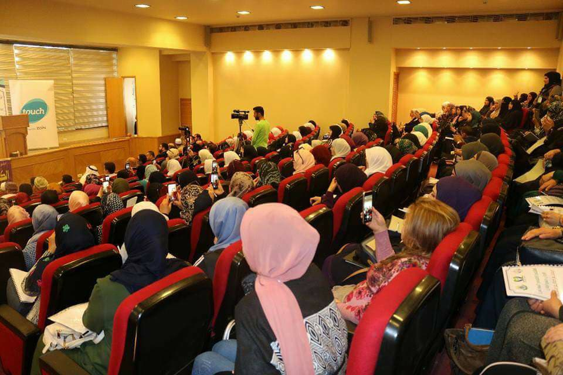
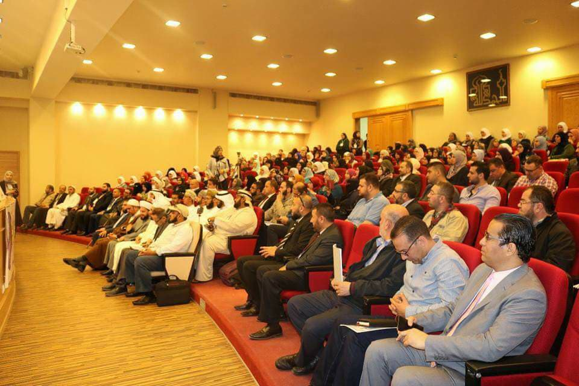
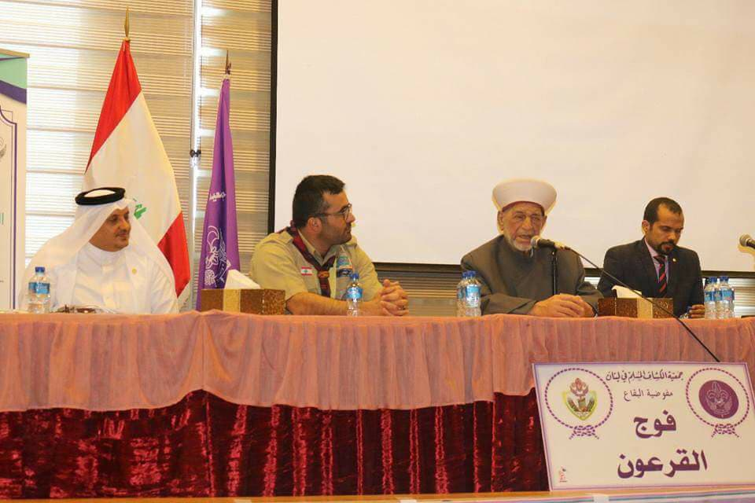

"سماحة مفتي زحلة والبقاع يفتتح الملتقى الخليجي "معلم صانع حضارة-
افتتح صباح الامس الخميس 5ابريل سماحة مفتي زحلة والبقاع الشيخ خليل الميس الملتقى الخليجي" معلم صانع حضارة" في أزهر البقاع بحضور ٣٠ مدرب عربي وخليجي ومشاركة ٣٠٠ متدرب، إضافة إلى خبراء التعليم في الوطن العربي، ووفود عربية من مصر، السعودية، سلطنة عمان، الجزائر ، المغرب، الكويت، ليبيا وسوريا، وذلك لرفع مهارات المعلم، ونقل الخبرات التربوية وأفضل التجارب العلمية العالمية.
افتتح الحفل بتلاوة مباركة من القرآن الكريم، ثم النشيد الوطني اللبناني، وبعدها ألقى سماحة المفتي الشيخ خليل الميس كلمته، والمستشار عبد الله شاهين المشرف العام على الملتقى الخليجي ومؤسس الرابطة العالمية للتربويين.
ثم كلمة الكشاف المسلم - فوج القرعون القاها عميد الفوج مصعب ذيب .
شارك في تقديم الحفل المدرب الدولي السعودي الدكتور عرار سويد والقائدة مريم ياسين .
يعد الملتقى الخليجي التربوي "معلم صانع حضارة" هذا الأول في لبنان، من أقوى الملتقيات التدريبية في الوطن العربي .
رعى الملتقى سماحة مفتي زحلة والبقاع الشيخ خليل الميس وجمعية الكشاف المسلم في لبنان -فوج القرعون، ووزارة الاتصالات اللبنانية، وشركة touch، وأكاديمية حضارة والرابطة العالمية للتربويين.
#معلم_صانع_حضارة
#المربي_الحضاري
هناك بعض الصور من الحفل


